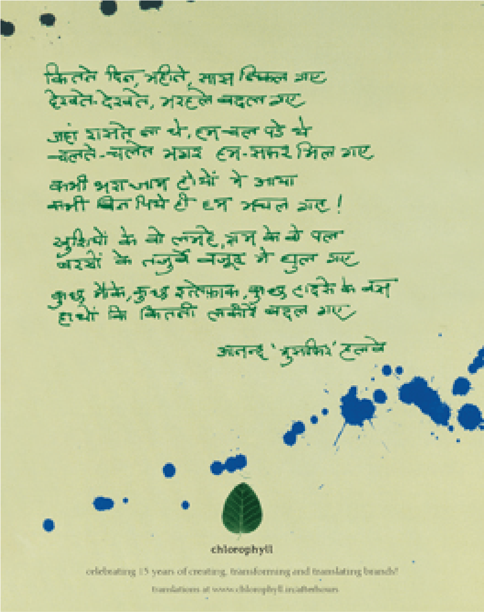

"So many days, and months, and years have passed by
So many milestones along this journey have gone by
We set along without any paths to follow
But fellow-seekers joined us, as we went by
There were times when the glass of wine overflowed
And times when on empty glasses we got high!
The moments of joy, the moments of pain
Have all become part of what we will be known by
Opportunities, chances, coincidences came our way
All became Destiny as the days went by"